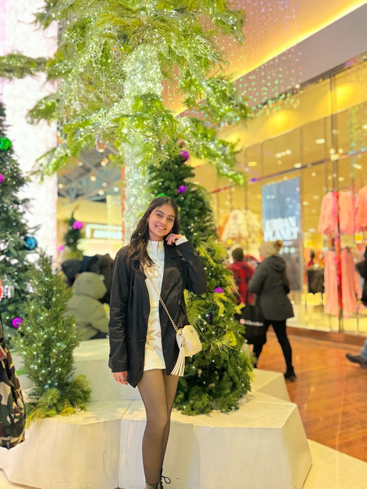

I work in visual design and digital marketing, and I love combining strategy and creativity to create memorable brand experiences. My area of expertise is creating captivating images, user-friendly interfaces, and unified brand identities. I am currently pursuing a Web Design diploma at SAIT. My work demonstrates a balance between artistic vision and technical execution, from designing interactive media and responsive websites to creating marketing campaigns and promotional designs for actual clients. I aim to design with purpose, communicate clearly, and inspire through aesthetics through my projects, which include Media Aesthetix, The BioSport, and multiple concept-driven campaigns.
Available for Summer 2026 internships
Hi, I’m Deepti — a web designer & junior digital marketer who loves turning messy problems into delightful, accessible interfaces.
I blend design fundamentals with data-informed decisions and a playful touch. Below is a curated set of projects that reflect my journey at SAIT, freelance work, and experiments.
Responsive Web
Interaction Design
Content Strategy

About & Narrative
A short story that ties my selected works together.
Skills & Tools
- Web: Semantic HTML, modern CSS, responsive layouts, basic JavaScript.
- Design: UI layouts, typography, colour systems, marketing assets.
- Tools: Figma, Adobe Photoshop, Illustrator, InDesign, WordPress.
- Marketing: Social media content, campaign graphics, simple A/B testing.
Selected Projects
5–10 impactful pieces.
Showing all projects.
Let’s collaborate
Questions, opportunities, or feedback? I’d love to hear from you.